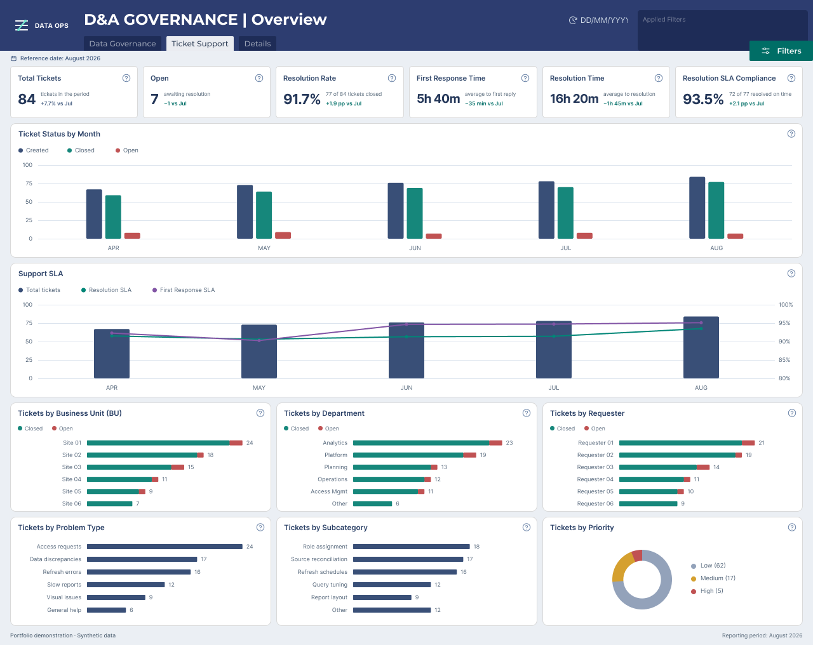
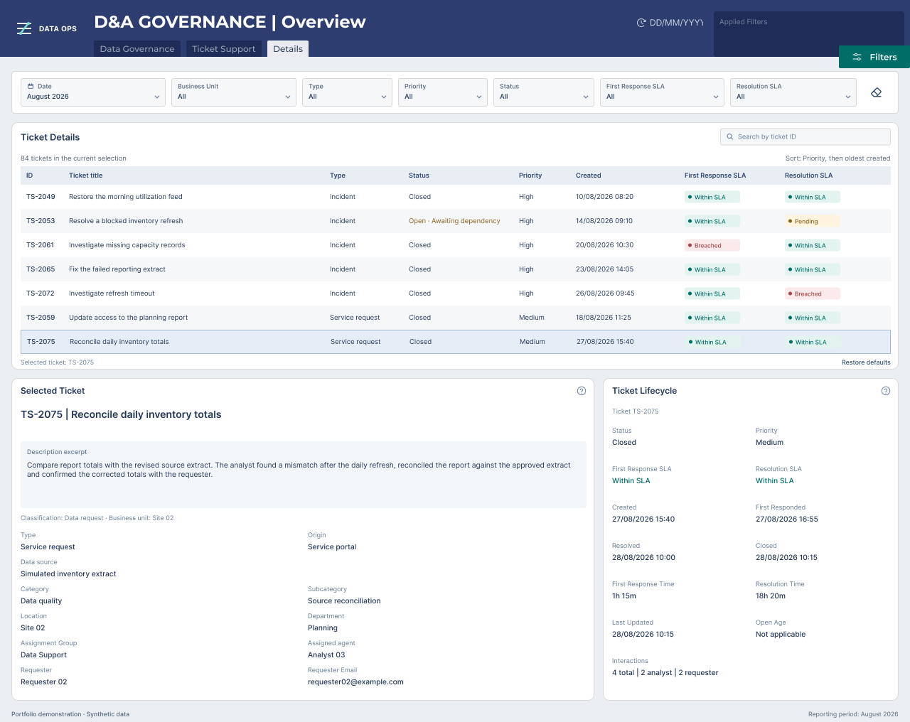

Painel de SLAs de atendimento
Do acompanhamento mensal dos SLAs à investigação do histórico de um chamado do Freshservice.
O que a gestão passou a avaliar
A avaliação dos prazos dependia de relatórios preparados por alguns prestadores a partir de exportações do Freshservice. Com o painel, a gestão passou a acompanhar os prazos de primeira resposta e resolução acordados em contrato, inclusive nos chamados urgentes, e ganhou uma base para avaliar renovações.
Indicium · Programa Lighthouse
Painel desenvolvido no Power BI. As duas telas apresentadas aqui foram reconstruídas no Figma com dados simulados.
Ticket Support
A visão mensal ajuda a identificar onde investigar variações de volume e de SLA. No exemplo simulado, 78 de 82 chamados avaliados cumpriram o SLA de primeira resposta (95,1%). Entre os 77 chamados resolvidos, 72 ficaram no prazo de resolução (93,5%).


Details
A visão por chamado mostra a situação dos dois SLAs e as datas que sustentam a avaliação. No chamado fictício TS-2075, a primeira resposta levou 1 h 15 min e a resolução levou 18 h 20 min. Ambos os prazos foram cumpridos no cenário simulado.


Contribuição e ferramentas
Modelei dados do Freshservice com SQL e dbt Core no Databricks e desenvolvi os indicadores, as comparações mensais e a visão por chamado no Power BI. Divergências entre relatórios foram corrigidas nas regras de cálculo, com validação da liderança e da TI do cliente.
- Freshservice
- Power BI
- SQL
- dbt Core
- Databricks
- Figma (mockups)